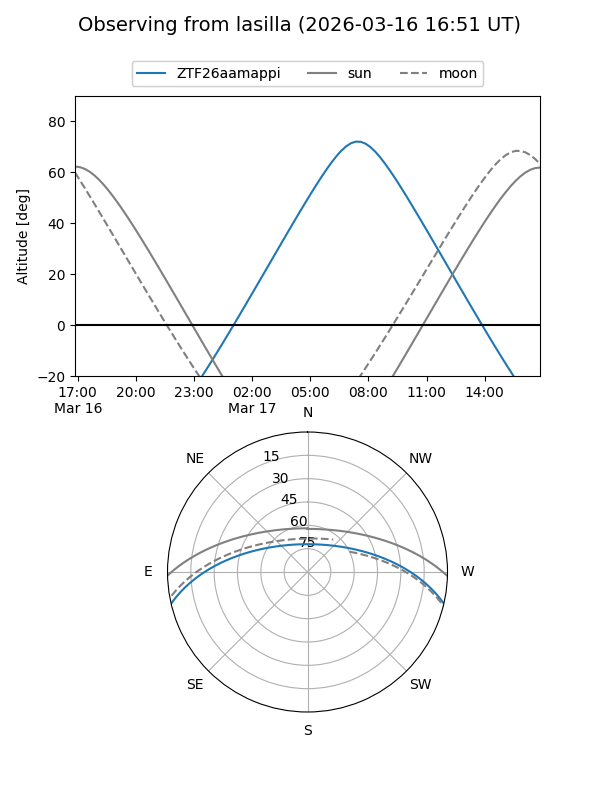
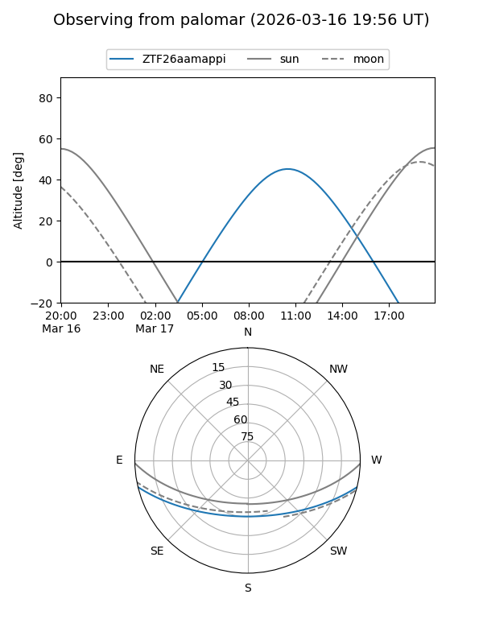

ZTF26aamappi
Target ZTF26aamappi at 2026-03-16 12:55
Aliases and brokers:
FINK: link
Lasair: link
ALeRCE: link
alt names
ZTF26aamappi (ztf,fink_ztf)
Coordinates:
equatorial (ra, dec) = 215.6031,-11.26241
equatorial (HMS+DMS) = 14:22:24.73,-11:15:44.67
galactic (l, b) = (335.8252,+45.71911)
Flags:
Photometry:
last ztfg=16.27
1 ztfg detections
Lightcurve
Visibility


Additional plots